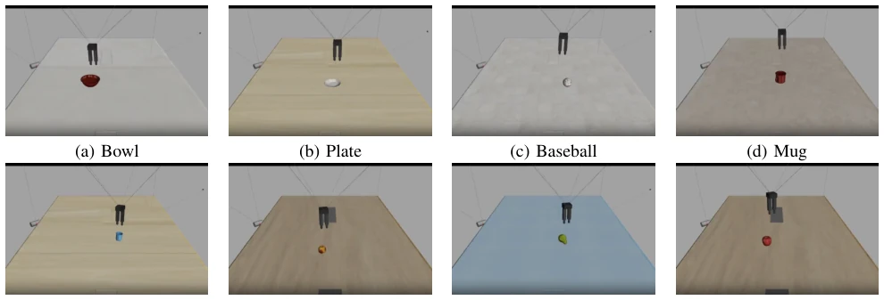

中文
← 返回 ← Back
RL Bootstrapping of OpenVLA-OFT for a Novel Robot Embodiment
Damir Nurtdinov, Alexei Kornaev, Alexander Maloletovabs pdf
论文点评 Review 这篇论文挺敢的，直接拿 OpenVLA-OFT 去适配一个没见过的线驱动并联机器人（CDPR），而且连一个示范数据都不给，纯靠强化学习（RL）在仿真里“裸奔”。虽然最终物体操作成功率只有 9.75%，听起来像“翻车现场”，但作者硬是把方向指令成功率从 34% 拉到了 53%，证明了 RL 在无数据冷启动下的可行性。不过，别指望这能直接落地，仿真里的“晚期不稳定”还是老毛病，离鲁棒操作差得远。文中提到的“推切”式捷径行为虽然有趣，但也暴露了奖励设计的局限。算是给新形态机器人找了一条“先跑起来再说”的野路子，但离工业级应用还早，更多是方法论上的验证，毕竟 345 小时的仿真训练成本也不低。
—
研究动机 Motivation 现有 VLA 模型如 OpenVLA [1] 和 OpenVLA-OFT [3] 适配新机器人通常依赖 10-150 条特定示范数据，这对定制机器人（如 CDPR）是巨大门槛。若没有现成数据集怎么办？现有 VLA-RL 工作如 SimpleVLA-RL [5] 或 RIPT-VLA [7] 虽引入 RL，但大多假设已有少量监督起点或依赖稀疏奖励。本文旨在解决“零示范”下的具身对齐问题，即在无任务数据集时，仅凭 RL 和仿真奖励建立语言、视觉与动作的映射，填补新形态机器人冷启动的空白，探索在未见过的控制接口上如何对齐语义，强调现有方法对数据集的依赖限制了新形态机器人的快速部署。
—
方法 Method 整体流程基于 MuJoCo 仿真栈，策略骨干为 OpenVLA-OFT，接收双 RGB 图像输入（俯瞰与手腕相机）。训练分两阶段：第一阶段用 PPO 训练四个方向原语（左、右、前、后），让策略理解指令语义；第二阶段用 GRPO 延续训练，扩展指令空间至“移动到<物体>”，涵盖 8 类目标。核心创新在于奖励设计，采用基于仿真几何的密集奖励（rt = wp(dt−1 −dt) + bs I[succt] −waP(at)），而非稀疏的二元结果奖励。这解决了新形态下早期成功轨迹稀缺的问题，通过距离变化引导策略。训练预算约 345 小时，无真实数据参与，通过密集信号引导策略在仿真中完成具身对齐，并包含动作编码共享。此外，还引入了 PID 控制器处理底层执行，确保仿真环境可控。
—
实验 Experiments 在 MuJoCo 仿真中评估，包含 4 个方向指令和 8 类物体指令。指标为主成功率。结果显示，PPO 到 GRPO 后，方向指令平均成功率从 34.25% 提升至 53.50%，其中“向左”和“向后”提升显著。物体指令严格成功率为 9.75%（39/400），但可视化显示策略能正确接近目标，失败多因晚期不稳定。相比纯 PPO 版本，GRPO 阶段显著改善了方向控制，证明了密集奖励在无示范场景下的有效性，尽管物体操作尚未鲁棒。硬件上使用了两块 NVIDIA A40 显卡，验证了方法在特定硬件上的可行性，Table I 详细列出了各方向指令的对比数据。
—

Fig. 1. Representative validation rollouts for move to <object>. Despite a strict success rate of 39/400 = 9.75%, the policy often approaches the correct target before late-rollout instability causes failure.